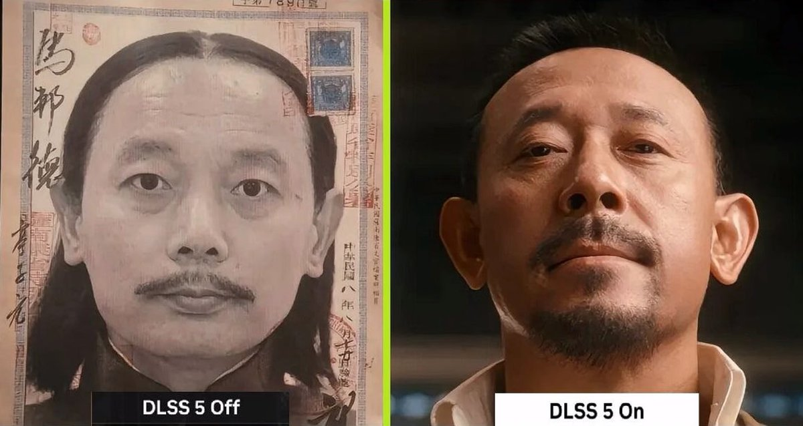

lovely水
@lovelyshuimao
DLSS5发布了！
技术是好技术，可以极大的提升游戏画面的精度
但是我认为，接下来的几年内游戏开发者对一些高精度内容（尤其是面部）的投入可能会变得更少
也就意味着如果不开启DLSS5可能画面还不如10年前的
就像现在有了光追，不开光线追踪的情况下，光珊做的很差
也就是说可能会会出现一个尴尬事，对于精美的游戏可能不开会变得更差，而那些本来就一般的游戏，也不需要这么高的性能（目前是两张5090）
